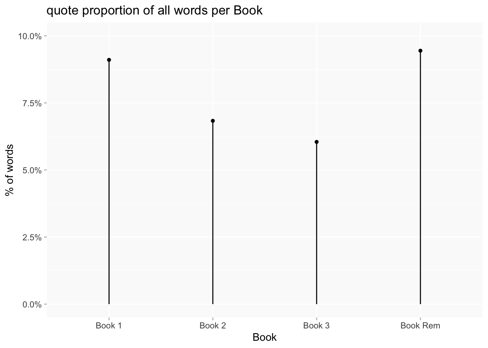
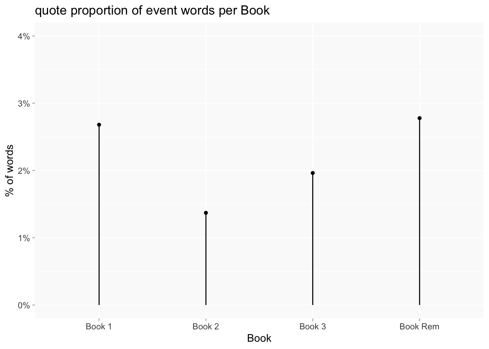
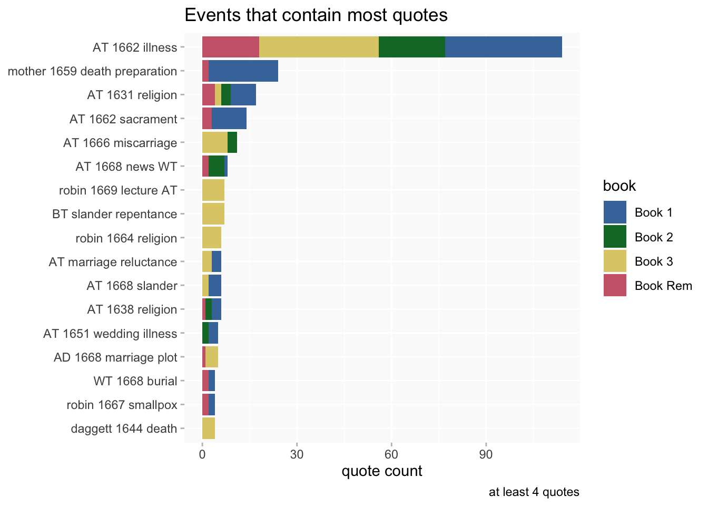
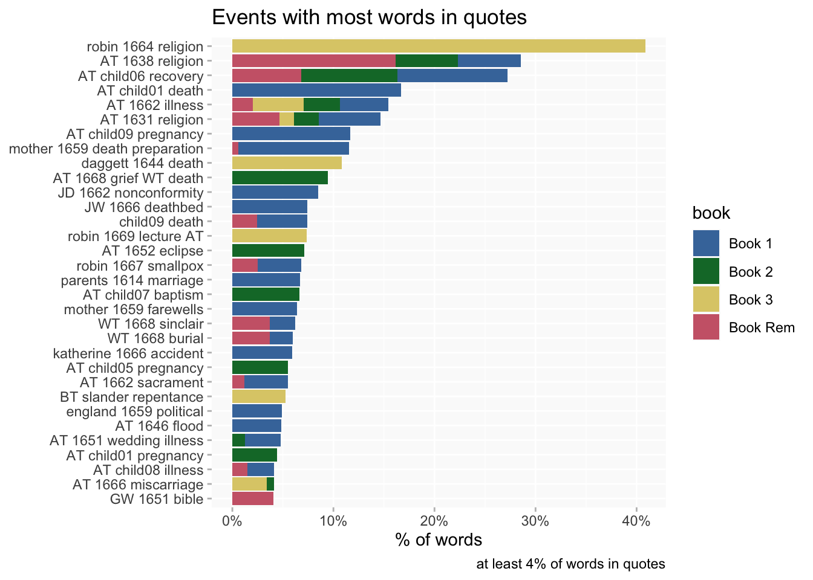
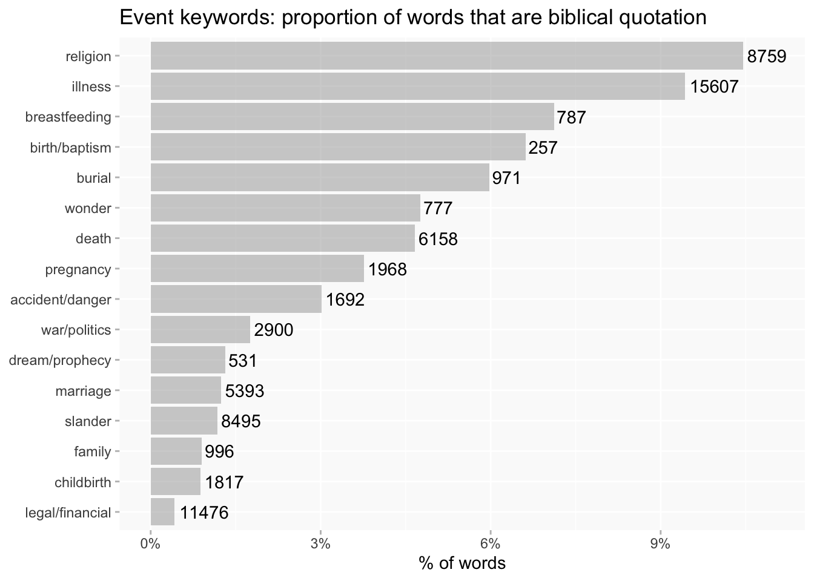
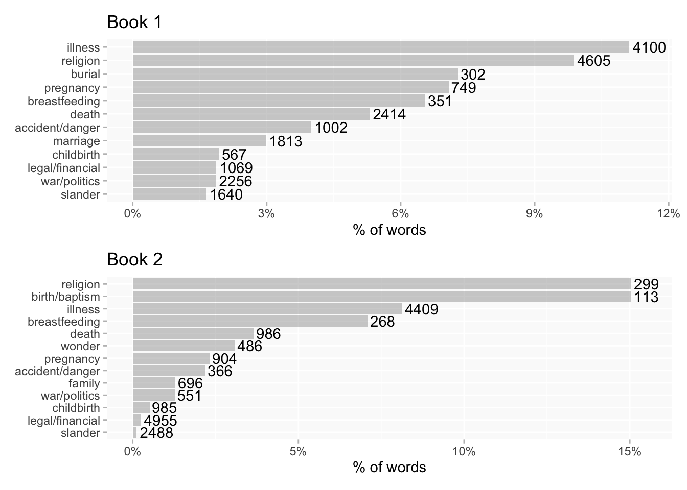
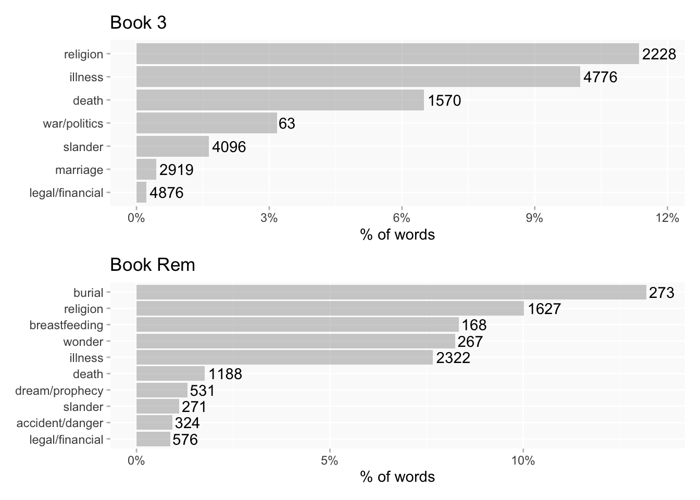
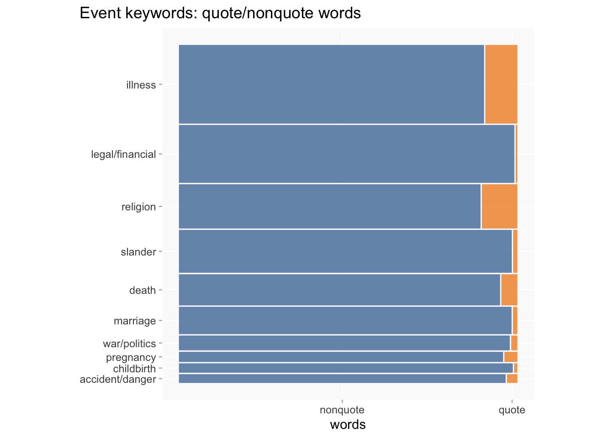
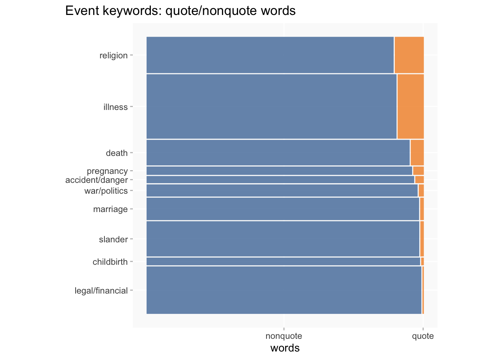
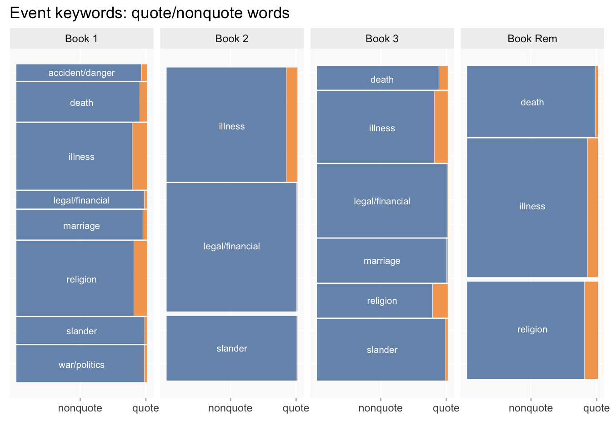

ATB events and biblical references
Locating <quote> in relation to events in the Books
These four pages are something I put together to help eyeball relationships between Events narratives and biblical quotations in the books (apart from quotes inside event mentions, I wanted to see if there were many quotations just after event tagging that might be related to the event; I don’t think there are).
Divs that were marked up as prayer or poetry are also highlighted, so it can also be used to look at eg how much biblical quotation is outside sections that are distinct prayer/meditation, or how much is inside poetry.
They’re kind of ugly! And not meant for actually reading the text (though it is more or less visible); page numbers are clickable links to the DSE. Most whitespace has been eliminated so there are big blocks of text on screen.
Quotes in Books vs events
For reference, overall % of words that are in <quote> tags, per book.
Total word counts used here exclude all editorial additions as well as original material that wasn’t part of the main text (like indexes, title pages, section titles(?check), page numbers). Using these totals, overall quotations average out to 7.6% of the total word count.
Event narratives are much less likely to contain quotations than the Books as a whole. Only about a quarter of events (aggregating any mentions throughout all the Books) contain any quotations at all (79 events of 319), and quotes only make up 2.1% of the total word count for events.
NB: “event” refers to the 319 events that we created metadata for (excluding groups); “event mention” refers to the individual tagged instances of those events in texts.
The breakdown by Book is interesting: 1 and Rem are still well ahead, but 2 and 3 have swapped places.

Which events have most quotes?
Within the events that do contain any quotations, most events contain only 1-3 quotes, but a few events are much more densely quoted. (The short labels are somewhat work in progress; there is a table at the bottom of the post with full descriptions if it’s unclear what any of them refer to.)

By percent of words instead of quote counts gives some slightly different results, but some of the top ranking events here are brief narratives with few mentions.

Event keywords and quotes
I’ve aggregated word counts for event keywords and, bearing in mind the limitations of these, it gives some interesting results. Analysis omits keywords for which no events contain any quotes (though that’s only 2 of 18) and some charts will also omit keywords with <1000 total words.
The total word count for each keyword (as well as the number of events) varies a lot; experimented with a few ways of showing this information.
This bar chart adds the total word count for each keyword. The most striking thing about that is that the third-largest keyword (legal/financial) contains very few biblical quotes. Slander seems surprisingly low to me.

Same broken down by Book, for comparisons.


A mosaic chart is an alternative way of showing both the proportions and the size of each category. Here I’m limiting to keywords with >1000 words for readability.
Sorting by size of keyword

Or sorting by proportion of words (as in the bar chart)

I think it’s easier to compare Books with this method. (alphabetical sorting this time)
